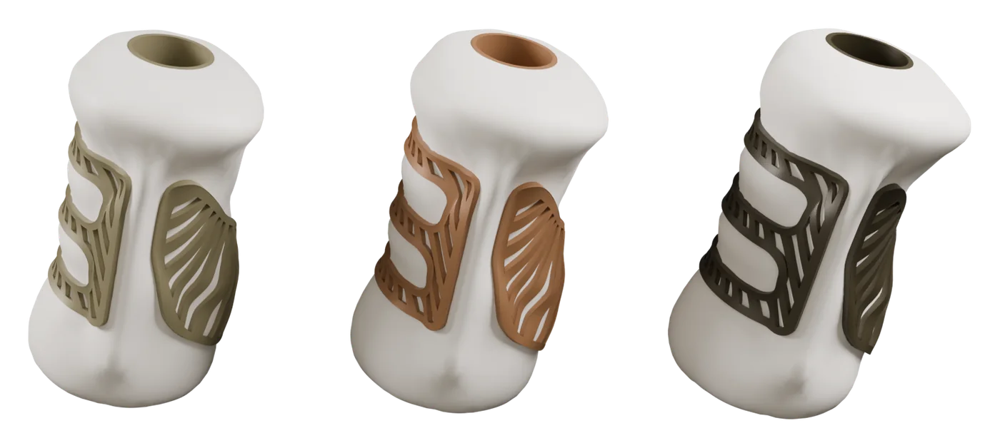

Se adapta a tu mano
Hendiduras anatómicas que siguen el contorno de tus dedos y reducen la fuerza que necesitas para sujetar, presionar y girar.
El mango ergonómico SOMA se adapta a tu mano para que agarrar, cortar, pelar y mezclar te cueste menos esfuerzo. Un solo mango para tus propios cubiertos y cero apariencia de hospital.

La artrosis provoca dolor, rigidez y pérdida de fuerza en los dedos. Con utensilios convencionales picar una cebolla se vuelve cansado, incómodo y, muchas veces, un motivo para pedir ayuda.
Fuente: Organización Mundial de la Salud (OMS), 2023. Artrosis.
Lo que más pesa no es el esfuerzo de cocinar. Es perder el control de tus propias manos.
SOMA no solo reduce la fuerza que necesitas: te devuelve la confianza de que cada movimiento sale como lo planeaste.
Hendiduras anatómicas que siguen el contorno de tus dedos y reducen la fuerza que necesitas para sujetar, presionar y girar.
Zonas de elastómero termoplástico (TPE) con textura: un agarre suave y estable para que el utensilio no se mueva cuando tú no quieres.
Acóplalo a tu tenedor, cuchara o cuchillo con una unión simple y resistente. No necesitas comprar cubiertos nuevos.
Cuerpo rígido de polipropileno que aguanta la fuerza de picar, batir o hacer palanca, sin doblarse como las bandas de silicona.
No tiene la apariencia de alguna herramienta médica. El mango hace lucir al producto como un utensilio contemporáneo de alta gama para la cocina.
Hecho para el uso diario, sencillo de lavar y con piezas reemplazables: si algo se desgasta, cambias esa parte, no todo el producto.
Usa los que ya tienes en casa: cuchillo para picar, tenedor para sostener o cuchara para mezclar.
Una unión simple y resistente fija tu cubierto al mango, sin mecanismos complicados ni movimientos de precisión.
Sujeta con la palma, deja que las hendiduras guíen tus dedos y trabaja con menos esfuerzo y más control.
El mismo diseño ergonómico en dististas presentaciones:

Probamos el prototipo en manos reales y escuchamos sus opiniones. Cada respuesta guía nuestros ajustes de tamaño y forma.

Un solo mango para tus cubiertos y la independencia de siempre en tu cocina.